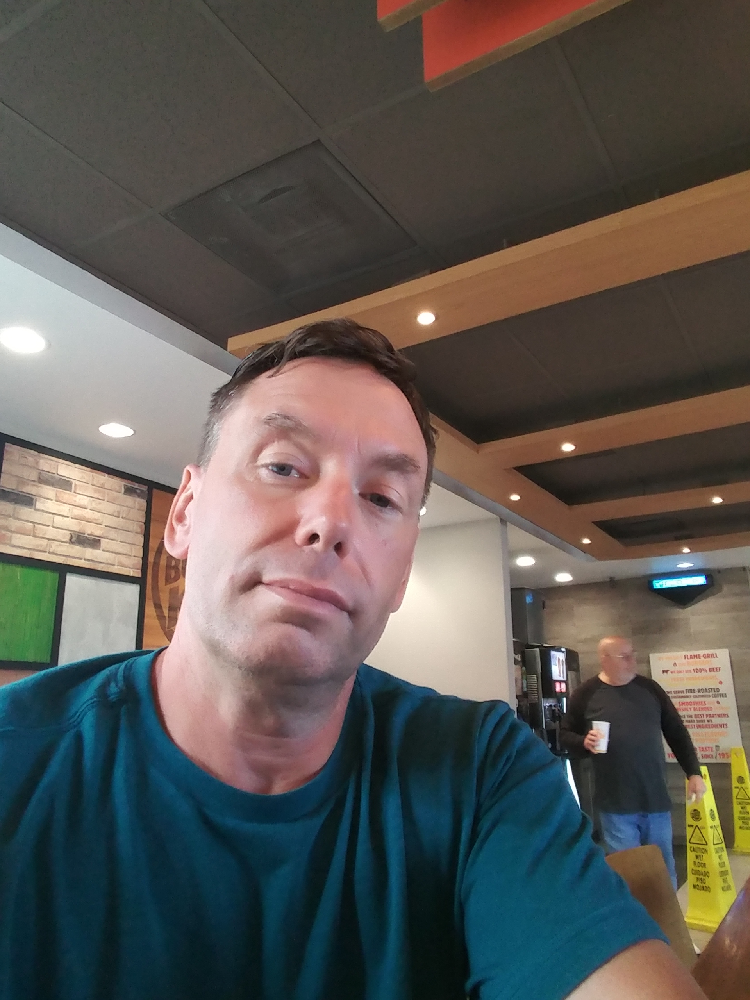
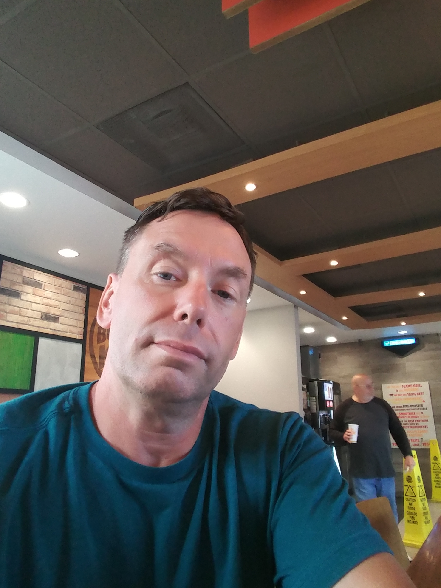

Brian Miller's Portfolio

.jpg)
 

My recent projects created at Epicodus
- Nights-project-1
- Vacation-spot
- Week-review
- Animal-Shelter
- media-query
This page is our first at home project to create a page useing what we have been learning durring the previous three weeks. This includes HTML, CSS, Bootstrap elements.
This page integrates multiple Bootstrap elements into its style from the HTML.
This page I was working with columns and rows through media query.
Here I was working with CSS selectors, CSS inheritance work, and other CSS practice.
This was a page to learn about responsive web design commonly reffered as view port at the screen.
A little to know about me.
I grew up in Washington State and I have one older brother and two older sisters. I have worked many different kinds of jobs ranging from a paper boy at 10 years old to restaurant work, automotive work, grocery industry, and the high tech industry of semi-conductor manufacturing.
I decided to take the opportunity to explore computer coding after moving here to Oregon before going back to work full time and see if this would be something thatS I could continue with as a carrier or just to have a littel more knowledge prior to taking the class.
My current hobbies are a little limited at the time but I like to go snow skiing, biking, hiking, fishing, and swiming, and enjoy going to the gym.